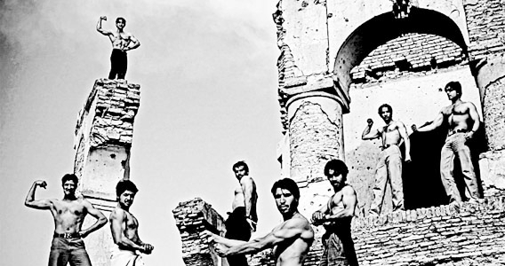
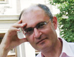

КОМПЛЕКС НЕПОЛНОЦЕННОСТИ
ПОД ЛИЧИНОЙ КАВКАЗСКОГО ГОНОРА

Доклад
председателя
Консервативной
партии Армении
Микаела Айрапетяна
на обсуждении,
организованном
в рамках «Стоп»
фестиваля грузинских
фильмов в Армении,
Ереван, 24 марта
2012 года, тема:
От «Мимино»
до наших дней:
Южнокавказская
трансформация.
Художественный анализ фильма «Мимино» был бы мне больше по душе, но учитывая тему, обратимся лишь к некоторым его эпизодам. В первую очередь отметим, что этот фильм, какие бы режиссерские, сценаристские или актерские достоинства он не имел, относится к периоду колонизации армян и грузин, это советский фильм, выполняющий советские задачи. Во время съемок «Мимино» старожилы Южного Кавказа – армяне и грузины, не имели своего цвета на карте, он был окрашен красным. Мы же хотели верить, что республики, под названием советские социалистические, на самом деле наши, и это выражено в фильме несколькими эпизодами. Вспомним два из них.
Сначала вспомним миф о воде, когда Рубик-джан говорит: «простой кран открываешь, вода течет - второе место в мире занимает!". Ему не хватает наглости, чтобы сказать: «первое место занимает», но вторым хотя бы должен быть, здесь говорит основной инстинкт самосохранения, иначе, без этого мифа, он вынужден будет посмотреть в глаза действительности, и увидеть, что нет никакого Дилиджана - это окрашенная красным Империя Зла, и сам он шофер, получающий всего лишь зарплату и «путевки» в этой империи. Если бы не этот миф «святой и бытовой подделки», Рубик-джан не смог бы приспособиться к своему существованию «армяшки», он должен был бы стать диссидентом, политзаключенным, жителем ГУЛАГа.
Тот же инстинкт самосохранения выплескивается из подсознания Мимино, когда он говорит: «А Боржоми? Сначала подумай, потом говори.» Этот короткий диалог, над которым смеялся до упаду советский зритель, оправдывая свое трусливое неприятие действительности, демонстрирует не только обреченность колонизированных народов на создание уродливых мифов, но и классическое «разделяй и властвуй» в исполнении советского империализма. Они - второсортные армянин и грузин - свой настоящий спор, настоящую мишень борьбы со злом, переводят в плоскость противопоставления друг другу, иногда - враждебности: «Дилиджан» лучше, или «Боржоми»? И множество таких вещей, начиная с умения или неумения готовить долму, и заканчивая соревнованием по проматыванию последних копеек перед паразитами из ресторанного оркестра. И поскольку у них нет смелости найти корень зла, ни у армянина Рубик-джана, ни у грузина Валико, их вышвыривают из гостиницы метрополии. Для прославленной в веках их храбрости и достоинства, в условиях империи, оставлен только быт, в котором Мимино может побороться всего лишь за честь своей сестры, и во имя Мимино, Рубик-джан может всего лишь лжесвидетельствовать в суде. Ничего более.
Вспомним еще один эпизод. Когда они просыпаются в кузове грузовика, Рубик-джан говорит: «В этой гостинице я директор». Да, армянину, грузину, эстонцу, латышу, украинцу оставлен только кузов грузовика, где они могут чувствовать себя ХОЗЯЕВАМИ. Несомненно – это очередной миф, поскольку человеческое существо, и особенно имеющий долговременный опыт государственности армянин и грузин, не могут существовать без чувства ХОЗЯИНА, и поэтому нужен его деформированный образ. В сознании порабощенных народов Советский Союз был некой метаморфозной цельностью, искажающей действительность и ценности. Изменилось ли что-либо в этой проекции после 90- ых, когда была восстановлена государственность этих народов? Нужно признать: и да, и нет.
Зафиксированный в «Мимино» комплекс неполноценности, спрятанный под личиной кавказского гонора, попытались огульно преодолеть в начале 1990-х. Грузины первыми ввели собственную национальную валюту, сразу же поменяли флаг, герб и другие атрибуты независимости. Армяне, также как и в образе торгоша-шофера, проявили больше медлительности, но тоже попытались показать признаки самостоятельности. С первого дня независимости Грузия выдвинула вопрос о выводе российских войск, вошедших туда с 1801, а затем с 1921 года. Здесь Армения проявила максимальную осторожность и присвоила этой армии статус военной базы. Грузия сегодня в ускоренных темпах, иногда выходя за рамки разумности, противостоит России – разрушает не только последние следы Красной Армии (и хорошо делает), но и памятники победы над общечеловеческим злом – фашизмом, хотя маленькая Грузия оставила тысячи жизней на жертвенном столе победы в этой войне. (В фильме есть упоминание об отце Валико и об еще одном однофамильце Мизандари). Армения здесь запаздывает, исходя из объективных и субъективных обстоятельств. Объективным, вы знаете, является фактор Турции, а субъективный фактор – это качество армянских властей за последние 20 лет. Время покажет, права ли Грузия, и не является это острое противостояние проявлением 200 летних страхов и фобий. Время покажет, права ли Армения, и не являются ли ее действия генетическим пережитком армянской мелкобуржуазии.
Это на уроне государств, а ЛЮДИ - армяне и грузины, уже не такие как в «Мимино». Тем, кто не видели красного знамени с серпом и молотом, уже больше 20 лет от роду, и для них независимость воспринимается как объективная реальность. С другой стороны и в Грузии, и тем более в Армении, через телевидение продолжается геокультурная экспансия России, прививающая новому поколению установки мировоззрения гомо-советикуса или гомо-русака. Это общая для всего постсоветсткого пространства проблема. Но есть и особенности.
Особенности для южнокавказских Армении и Грузии приобретают очертания, проявляются в образах конкуренции. Сейчас Москва уже не сужает наши возможности самореализации рамками быта (вспомним эпизод о том, чья вода лучше). Но разве прекратилась эта необоснованная безрезультатная конкуренция? Грузины здесь тоже на шаг впереди. В качестве примера могу привести рекламные кампании. Грузинская реклама делается без противопоставления – и год от года увеличивается количество армянских туристов, отдыхающих на грузинском побережье. В тоже время в Армении реклама ведется в сравнении (то есть в противопоставлении) с туристическими зонами Грузии, Турции и арабских стран. Причина тут ясна. Армяне больше зависят от России, поэтому такой советский способ восприятия мира как противопоставление, сохраняется. Но железный занавес прорван, дух свободы проник и на Южный Кавказ, и полноценная свобода - это только вопрос времени. Уничтожение Византийской империи тоже длилось несколько сот лет. Задача в том, чтобы Армения и Грузия не остались под руинами очередной развалившейся империи.
В прошлом году недолго путешествовал по Грузии. Культура кепок-аэродромов, которая есть в Мимино, на грани уничтожения. Грузины моложе 40 лет, в отличие от армянской молодежи, уже не носят туфли с заостренными носами. Выражение грузинских глаз, которое лет пять назад точно повторяло взгляд среднестатистического армянина – огорченного, усталого, сокрушенного, - сейчас более похоже на взгляд западного человека - ясный, без страха перед завтрашним днем. И это вовсе не зависит от потребительской корзины, здесь между нами нет разницы. Дело в людях, нашедших свой цивилизационный полюс, в определивших свой культурный ареал гордых людях. Армения же еще в ценностно-системном хаосе. Как бы сказал Туманян: «Между двух веков, между двух камней, устал я - быть между, новых товарищей и старых царей».
Если грузинам больше не будет навязано вертеться в орбите ценностной системы России, здесь можно считать решенным болезненную проблему справедливых выборов, проблему борьбы с коррупцией и многие другие проблемы, которые являются зеркальным отражением нынешней российской системы. Помните, как Саакашвили, принявший флаг с крестом, строго поступил с не толерантным священнослужителем? Для Армении это все пока за горами. Конечно, нельзя утверждать, что грузины окончательно трансформировались, тем более армяне, но основа для этого положена, частично на государственном уровне, частично - из-за внешних обстоятельств. Если Валико не возмущало рабовладельческое поведение сестры великорусской проводницы, которая беспощадно издевалась над ним, многие сегодняшние Мимино, с которыми я разговариал в Батуми, уверяют, что никогда не забудут бомбежки грузинского побережья во время русско-грузинской войны. В Тбилиси было очень трудно общаться, всем, кому нет сорока, уже не владеют русским, а английский еще не прижился. Тем временем в Армении извратили единственный закон, который нес в себе достоинство, «Закон о языке», хотя в этом не было нужды. Я слышал, что в 70-ых или 80-ых годах в Ереван прибыла делегация Союза писателей Азербайджанской ССР, с призывом к армянским писателям поехать в Баку и уговорить местных армян, чтобы те своих детей отдавали не в русские, а в армянские школы. Чтобы азербайджанцы, в желании не отстать от высококлассных армян, не подражали бы им, и не посылали своих детей в русские школы.
В заключение, нужно констатировать, что достойную часть южнокавказких народов, и в особенности, армян и грузин, в советское время объединяла общая цель - противостоять московской ценностной экспансии, и в то же время простые массы разделяли, и поднимали друг против друга мифы, диктуемые из центра, фальшивая, бытовая низкопробная конкуренция и тщеславие. Сегодня объединяющим фактором для элит может стать не противодействие, не противопоставление, а западная система ценностей со своей демократией и гуманизмом. А народы может объединить перспектива счастливого будущего, которое, после разрушения железного занавеса, создается не в российских судах, где судят Валико и ставят Рубик-джана в смешное положение, а в Свободном мире.
Благодарю за внимание.
Микаел Айрапетян
24-03-12
Ереван
Перевод с армянского: Л. Погосян
На фото вверху: После низвержения Талибан
резко возросла популярность
бодибилдинга в Афганистане.
Только в Кабуле открылось
более 90 тренажерных залов.
Повсюду можно видеть
фанерные рекламные
щиты с неуклюжими
изображениями Арнольда
Шварценеггера или других
знаменитых культуристов.
Тренажерные залы носят
такие названия как
Gold Gym, Super Gym,
и Super Gold Top Gym.
Они расположены
в разрушенных войной
зданиях и свидетельствуют
о том, что страна
прилагает большие
усилия для возрождения.
Бенджамин Лови, www.benlowy.com
Художественный анализ фильма «Мимино» был бы мне больше по душе, но учитывая тему, обратимся лишь к некоторым его эпизодам. В первую очередь отметим, что этот фильм, какие бы режиссерские, сценаристские или актерские достоинства он не имел, относится к периоду колонизации армян и грузин, это советский фильм, выполняющий советские задачи. Во время съемок «Мимино» старожилы Южного Кавказа – армяне и грузины, не имели своего цвета на карте, он был окрашен красным. Мы же хотели верить, что республики, под названием советские социалистические, на самом деле наши, и это выражено в фильме несколькими эпизодами. Вспомним два из них.
Сначала вспомним миф о воде, когда Рубик-джан говорит: «простой кран открываешь, вода течет - второе место в мире занимает!". Ему не хватает наглости, чтобы сказать: «первое место занимает», но вторым хотя бы должен быть, здесь говорит основной инстинкт самосохранения, иначе, без этого мифа, он вынужден будет посмотреть в глаза действительности, и увидеть, что нет никакого Дилиджана - это окрашенная красным Империя Зла, и сам он шофер, получающий всего лишь зарплату и «путевки» в этой империи. Если бы не этот миф «святой и бытовой подделки», Рубик-джан не смог бы приспособиться к своему существованию «армяшки», он должен был бы стать диссидентом, политзаключенным, жителем ГУЛАГа.
Тот же инстинкт самосохранения выплескивается из подсознания Мимино, когда он говорит: «А Боржоми? Сначала подумай, потом говори.» Этот короткий диалог, над которым смеялся до упаду советский зритель, оправдывая свое трусливое неприятие действительности, демонстрирует не только обреченность колонизированных народов на создание уродливых мифов, но и классическое «разделяй и властвуй» в исполнении советского империализма. Они - второсортные армянин и грузин - свой настоящий спор, настоящую мишень борьбы со злом, переводят в плоскость противопоставления друг другу, иногда - враждебности: «Дилиджан» лучше, или «Боржоми»? И множество таких вещей, начиная с умения или неумения готовить долму, и заканчивая соревнованием по проматыванию последних копеек перед паразитами из ресторанного оркестра. И поскольку у них нет смелости найти корень зла, ни у армянина Рубик-джана, ни у грузина Валико, их вышвыривают из гостиницы метрополии. Для прославленной в веках их храбрости и достоинства, в условиях империи, оставлен только быт, в котором Мимино может побороться всего лишь за честь своей сестры, и во имя Мимино, Рубик-джан может всего лишь лжесвидетельствовать в суде. Ничего более.
Вспомним еще один эпизод. Когда они просыпаются в кузове грузовика, Рубик-джан говорит: «В этой гостинице я директор». Да, армянину, грузину, эстонцу, латышу, украинцу оставлен только кузов грузовика, где они могут чувствовать себя ХОЗЯЕВАМИ. Несомненно – это очередной миф, поскольку человеческое существо, и особенно имеющий долговременный опыт государственности армянин и грузин, не могут существовать без чувства ХОЗЯИНА, и поэтому нужен его деформированный образ. В сознании порабощенных народов Советский Союз был некой метаморфозной цельностью, искажающей действительность и ценности. Изменилось ли что-либо в этой проекции после 90- ых, когда была восстановлена государственность этих народов? Нужно признать: и да, и нет.
Зафиксированный в «Мимино» комплекс неполноценности, спрятанный под личиной кавказского гонора, попытались огульно преодолеть в начале 1990-х. Грузины первыми ввели собственную национальную валюту, сразу же поменяли флаг, герб и другие атрибуты независимости. Армяне, также как и в образе торгоша-шофера, проявили больше медлительности, но тоже попытались показать признаки самостоятельности. С первого дня независимости Грузия выдвинула вопрос о выводе российских войск, вошедших туда с 1801, а затем с 1921 года. Здесь Армения проявила максимальную осторожность и присвоила этой армии статус военной базы. Грузия сегодня в ускоренных темпах, иногда выходя за рамки разумности, противостоит России – разрушает не только последние следы Красной Армии (и хорошо делает), но и памятники победы над общечеловеческим злом – фашизмом, хотя маленькая Грузия оставила тысячи жизней на жертвенном столе победы в этой войне. (В фильме есть упоминание об отце Валико и об еще одном однофамильце Мизандари). Армения здесь запаздывает, исходя из объективных и субъективных обстоятельств. Объективным, вы знаете, является фактор Турции, а субъективный фактор – это качество армянских властей за последние 20 лет. Время покажет, права ли Грузия, и не является это острое противостояние проявлением 200 летних страхов и фобий. Время покажет, права ли Армения, и не являются ли ее действия генетическим пережитком армянской мелкобуржуазии.
Это на уроне государств, а ЛЮДИ - армяне и грузины, уже не такие как в «Мимино». Тем, кто не видели красного знамени с серпом и молотом, уже больше 20 лет от роду, и для них независимость воспринимается как объективная реальность. С другой стороны и в Грузии, и тем более в Армении, через телевидение продолжается геокультурная экспансия России, прививающая новому поколению установки мировоззрения гомо-советикуса или гомо-русака. Это общая для всего постсоветсткого пространства проблема. Но есть и особенности.
Особенности для южнокавказских Армении и Грузии приобретают очертания, проявляются в образах конкуренции. Сейчас Москва уже не сужает наши возможности самореализации рамками быта (вспомним эпизод о том, чья вода лучше). Но разве прекратилась эта необоснованная безрезультатная конкуренция? Грузины здесь тоже на шаг впереди. В качестве примера могу привести рекламные кампании. Грузинская реклама делается без противопоставления – и год от года увеличивается количество армянских туристов, отдыхающих на грузинском побережье. В тоже время в Армении реклама ведется в сравнении (то есть в противопоставлении) с туристическими зонами Грузии, Турции и арабских стран. Причина тут ясна. Армяне больше зависят от России, поэтому такой советский способ восприятия мира как противопоставление, сохраняется. Но железный занавес прорван, дух свободы проник и на Южный Кавказ, и полноценная свобода - это только вопрос времени. Уничтожение Византийской империи тоже длилось несколько сот лет. Задача в том, чтобы Армения и Грузия не остались под руинами очередной развалившейся империи.
В прошлом году недолго путешествовал по Грузии. Культура кепок-аэродромов, которая есть в Мимино, на грани уничтожения. Грузины моложе 40 лет, в отличие от армянской молодежи, уже не носят туфли с заостренными носами. Выражение грузинских глаз, которое лет пять назад точно повторяло взгляд среднестатистического армянина – огорченного, усталого, сокрушенного, - сейчас более похоже на взгляд западного человека - ясный, без страха перед завтрашним днем. И это вовсе не зависит от потребительской корзины, здесь между нами нет разницы. Дело в людях, нашедших свой цивилизационный полюс, в определивших свой культурный ареал гордых людях. Армения же еще в ценностно-системном хаосе. Как бы сказал Туманян: «Между двух веков, между двух камней, устал я - быть между, новых товарищей и старых царей».
Если грузинам больше не будет навязано вертеться в орбите ценностной системы России, здесь можно считать решенным болезненную проблему справедливых выборов, проблему борьбы с коррупцией и многие другие проблемы, которые являются зеркальным отражением нынешней российской системы. Помните, как Саакашвили, принявший флаг с крестом, строго поступил с не толерантным священнослужителем? Для Армении это все пока за горами. Конечно, нельзя утверждать, что грузины окончательно трансформировались, тем более армяне, но основа для этого положена, частично на государственном уровне, частично - из-за внешних обстоятельств. Если Валико не возмущало рабовладельческое поведение сестры великорусской проводницы, которая беспощадно издевалась над ним, многие сегодняшние Мимино, с которыми я разговариал в Батуми, уверяют, что никогда не забудут бомбежки грузинского побережья во время русско-грузинской войны. В Тбилиси было очень трудно общаться, всем, кому нет сорока, уже не владеют русским, а английский еще не прижился. Тем временем в Армении извратили единственный закон, который нес в себе достоинство, «Закон о языке», хотя в этом не было нужды. Я слышал, что в 70-ых или 80-ых годах в Ереван прибыла делегация Союза писателей Азербайджанской ССР, с призывом к армянским писателям поехать в Баку и уговорить местных армян, чтобы те своих детей отдавали не в русские, а в армянские школы. Чтобы азербайджанцы, в желании не отстать от высококлассных армян, не подражали бы им, и не посылали своих детей в русские школы.
В заключение, нужно констатировать, что достойную часть южнокавказких народов, и в особенности, армян и грузин, в советское время объединяла общая цель - противостоять московской ценностной экспансии, и в то же время простые массы разделяли, и поднимали друг против друга мифы, диктуемые из центра, фальшивая, бытовая низкопробная конкуренция и тщеславие. Сегодня объединяющим фактором для элит может стать не противодействие, не противопоставление, а западная система ценностей со своей демократией и гуманизмом. А народы может объединить перспектива счастливого будущего, которое, после разрушения железного занавеса, создается не в российских судах, где судят Валико и ставят Рубик-джана в смешное положение, а в Свободном мире.
Благодарю за внимание.
Микаел Айрапетян
24-03-12
Ереван
Перевод с армянского: Л. Погосян
Бенджамин Лови, www.benlowy.com
Кавказский Центр Миротворческих Инициатив

© Ассоциация Текали - info@southcaucasus.com